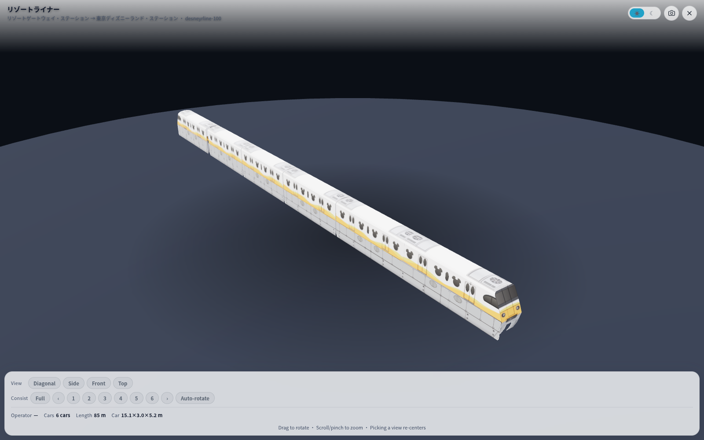
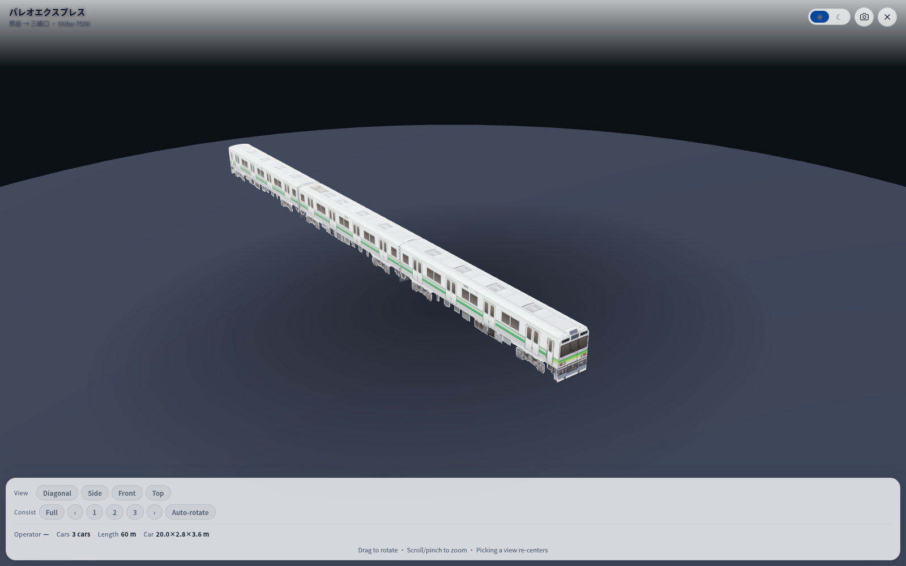
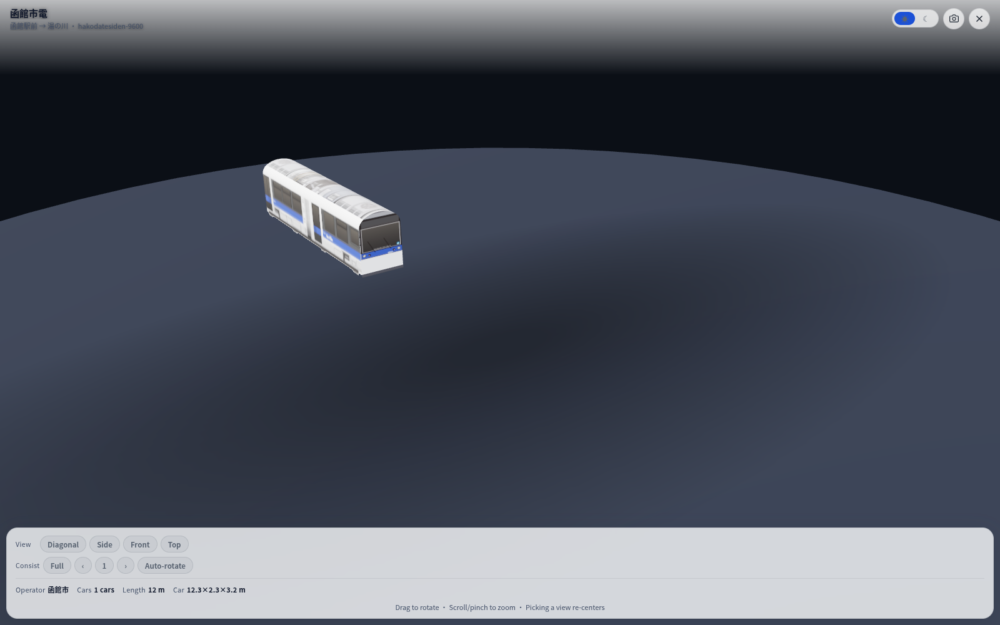
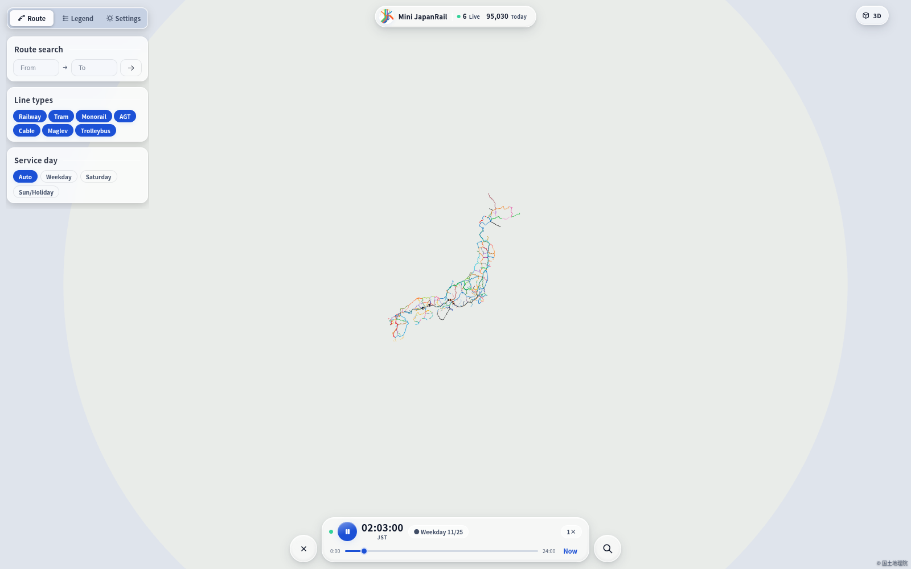

1. desneyrline-100 — 迪士尼度假区线 100 形（6 辆）

✅ 通过：黄色波浪带 + 米奇窗，整列可见。不是 2D 图标，不是素色占位盒。
2. titibu-7500 — 秩父 7500 系（3 辆）

✅ 通过：白底绿带，整列可见。不是 2D 图标，不是素色占位盒。
3. hakodatesiden-9600 — 函馆市电 9600 形（1 辆）

✅ 通过：白底蓝带，整车可见。不是 2D 图标，不是素色占位盒。
4. 地图本身（本地副本）

结论与建议
✅ 内测通过：三辆车全部正常加载 GLB 模板（__tmplInfo.ready=true），没有一辆触发素色占位盒回退，没有一辆显示 2D 图标；第三轮零控制台错误；对照组山手线 E235（11 辆）表现完全一致。迪士尼车高 5.24 m 已核实：含单轨导向梁裙边（官方全高 5,237 mm = 车体 3,807 mm + 梁高 ~1,430 mm），数值正确，无需修正。
❓ 建议选 A：合并 models-pipeline 到 main，一次解决全部 488 辆车、405 条映射。B 只修三条线，留下 485 辆同类缺口。合并后白天抽查三条线运行中班次最终确认（本次深夜无班次，地图上的 3D 列车实例未能直接目击）。另注意：秩父鉄道 operator key 错指、train_wiki_map 错数据这两个小问题，合并本身不修复，需另行处理。
完整报告：~/workspace/jr3d/work/main-site-localtest-20261126/LOCALTEST.md ｜ 第三轮结果：results3.json ｜ 核对报告：../main-site-code-audit-20261126/MAIN_SITE_AUDIT.md（仓库内路径）